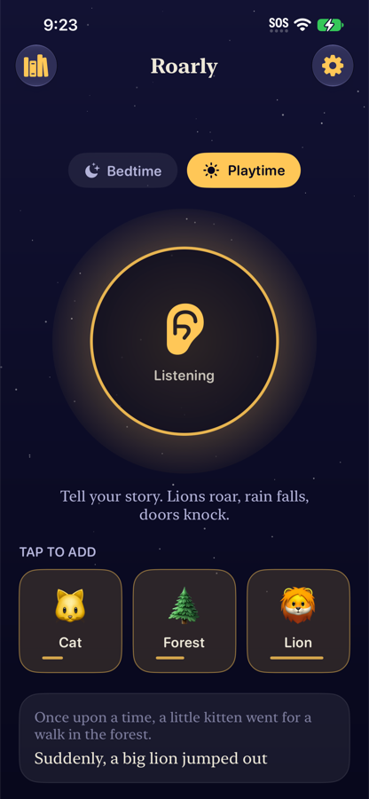
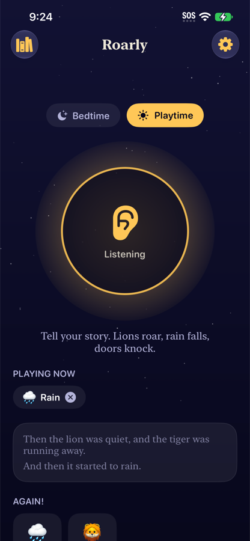
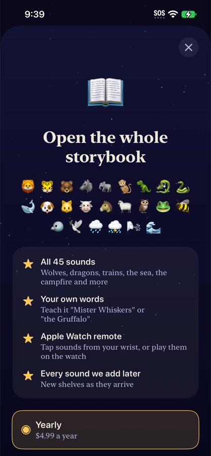
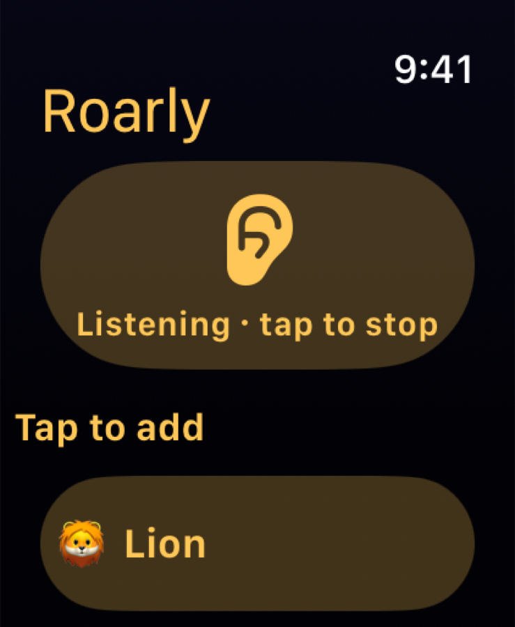

Status report · 2026-11-17
Roarly: first build
Roarly works on your iPhone 13. It listens on the device and plays the right sound from context: the lion roars when it jumps out, and the tiger running away stays quiet. Unsure moments become cards to tap. It's in projects/roarly with CI, a TestFlight workflow, an App Store Connect record, two in-app purchase products and you as a tester. The first TestFlight build is not out yet: releasing is one command for you (§5), blocked tonight only because another session had uncommitted work in the checkout.
Verified
- On-device speech + decisions + sounds on the iPhone 13 (iOS 27.2): a spoken story recording streamed through the real SpeechAnalyzer (
-listenFile), every sound right (log in §3). - Context rules: 23 RoarlyKit tests incl. a 36-line story eval, all passing locally and in
roarly-ci.yml. - UI on device: story screen, suggestions, loops, paywall with live sandbox prices.
- Watch UI in the watchOS Simulator.
Not verified
- The live microphone on the iPhone: iOS asks for permission on first use and I can't tap it (UI automation is off on your phone). Echo cancellation is therefore untested too.
- Phone ↔ watch over WatchConnectivity: no physical watch is paired.
- Apple's model on an iPhone: your iPhone 13 has no Apple Intelligence; I measured it on the Mac.
- A real purchase: needs a person at Apple's sheet (TestFlight buys are free).
What Roarly does




| Sounds | 45 sounds in 7 shelves, 12 free. Animals, weather loops (rain, wind, sea, forest, night, campfire, river), things, magic. 3.8 MB in all. |
|---|---|
| Modes | Bedtime (softer, fades at “the end / good night”) and Playtime. Automation: Mostly automatic / Balanced / Mostly ask me. |
| Pro | All sounds, your own trigger words (hold a sound in the library), the watch remote. Yearly $4.99 with a 1-week free trial, lifetime $14.99. |
| Privacy | No account, backend, analytics or recordings. Privacy and support pages: projects/roarly/docs (published with the site). |
| Watch | Start/stop, suggestions, loops, replay; optional playback on the watch speaker. |
What the iPhone heard and played
The story below was read by the Mac's voice into a file, copied into the app on your iPhone and streamed through the real on-device speech model at normal speed (playtime, balanced). From the device console:
| Said | Roarly did |
|---|---|
| Once upon a time, a little kitten went for a walk in the forest. | Offered Cat and Forest as cards |
| Suddenly, a big lion jumped out from behind a tree! | Played the lion, about 2 s before the sentence finished |
| He opened his mouth and roared. | Played the lion again (“roared” goes to the lion in the story) |
| Then the lion was quiet, and the tiger was running away. | Nothing (a card appeared mid-sentence, then went away) |
| And then it started to rain. | Started the rain loop |
| Knock knock! Who's there? It was a sleepy owl. | Knock, then owl |
| The dog barked at the moon. | Dog |
| Oh no, a tiger is chasing you! | Tiger (“oh no” is alarm, not negation) |
| The rain stopped and the sun came out. | Stopped the rain |
One bug found this way and fixed: “…and roared” right after the lion appeared was blocked by the 6-second repeat guard. The sound word itself may now repeat after 2.5 s (test testSoundWordRepeatsSoonAfterAppearance).
The bundled 0.6B model doesn't help (yet)
As you asked, Qwen3-0.6B-4bit ships in the app (335 MB, like Voxbrief), fast enough (~430 ms per question on the iPhone 13). But on 22 “should it play now?” sentences it answered close to chance: on the phone it said yes to all 10 self-test cases. Apple's on-device model got 18 of 22 and only ever erred toward staying quiet.
So on iPhones without Apple Intelligence (yours included), the rules decide and unsure sounds wait for a tap; the built-in model is a switch in Settings (“Try the built-in model (experimental)”). The rules alone pass all 36 eval lines.
Where the sounds come from
No sound API keys were available and the Spark was offline, so every sound is a public-domain / CC0 recording (Wikimedia Commons, OpenGameArt, NPS Yellowstone) or one CC BY 4.0 thunderclap (credited in Settings › Sound credits), trimmed and leveled by projects/roarly/tools/build_sounds.py. Apple's built-in sound classifier picked the clip windows (tools/classify_sound.swift): the lion clip classifies as lion_roar, crickets as cricket_chirp, the sea as ocean.
Weak ones I couldn't verify by ear: cow, elephant, owl, bee, boat horn, train whistle, airplane and wind are synthesized; monkey is a gorilla; horse is hooves. Left out until a good free recording turns up: duck, rooster, pig, goat.
What's left for you
First, cut the release. CI is green on c554a5a and the dry run passed. cut_release.sh refused only because another session (the new projects/folio) had uncommitted files in this checkout, and I wasn't allowed to --force past that. Once that work is committed or set aside:
scripts/cut_release.sh roarly 0.1.0 --watch # tags roarly-v0.1.0 → roarly-testflight.yml
Then the TestFlight invite goes out by itself to the internal group, or run node .claude/skills/heji-app-store-connect/asc.mjs invite-tester com.hejitech.roarly tianhaozhou95@icloud.com once the build is processed. A git stash entry from tonight (“WIP on main: c554a5ae”) holds a copy of those folio files; everything was restored, so it can be dropped once their owner confirms.
- Cut Roarly 0.1.0The command above; the workflow uploads to TestFlight and waits for Apple's verdict.
- Install from TestFlight and tell a storyAllow the microphone at the first lantern tap. Try “A tiger is chasing you!” and “The tiger ran away.”
- Listen to the library and list sounds to replaceEspecially the synthesized ones above.
- Confirm the prices$4.99/year with a free week, $14.99 lifetime. Change them in App Store Connect › Roarly › Monetization if you want different ones.
- App Privacy questionnaireWebsite only: “No, we do not collect data”.
- Check the content rights answerI set “uses third-party content” (the CC0 sounds; we have the rights). Change it if you read it differently.
- Store screenshots and submit for reviewNot done: screenshots, and the first in-app purchases go to review with the app version (skill heji-app-store-iap §1). Submit days apart from the other apps (4.3).
- Try the watch appInstall it from the Watch app, open it during a story.
- Optional: turn on Settings › Developer › Enable UI AutomationLets me run the UI tests (
RoarlyUITests) and the live-mic test on your phone next time.
Where everything is
| Code | projects/roarly (read its CLAUDE.md); decisions in docs/decisions.md |
|---|---|
| Commits | e0289927 (the app), c554a5a (watch standalone install) |
| CI | .github/workflows/roarly-ci.yml: RoarlyKit tests + iPhone/watch build |
| Release | scripts/cut_release.sh roarly → roarly-v<version> → roarly-testflight.yml (also weekly, Wednesdays 20:30 UTC) |
| App Store Connect | Roarly: Story Sound Effects (id 6836171344; “Roarly” was taken), bundle com.hejitech.roarly, version 0.1.0 draft: description, keywords, subtitle, URLs, Entertainment + Education, age rating, Free, all territories |
| Products | com.hejitech.roarly.pro.yearly (group “Roarly Pro”, 175 prices + free-week offers), com.hejitech.roarly.pro.lifetime; both READY_TO_SUBMIT with review screenshots |
| Tester | tianhaozhou95@icloud.com in internal group “Team” |
scripts/cut_release.sh roarly --dry-run # next release
Your notes
Questions, corrections, decisions. Saved in this browser. Copy summary puts the whole report, your ticks and these notes on the clipboard for any agent, in this session or a new one.
Report: reports/2026-11-17-roarly-first-build · serve with script/serve.sh